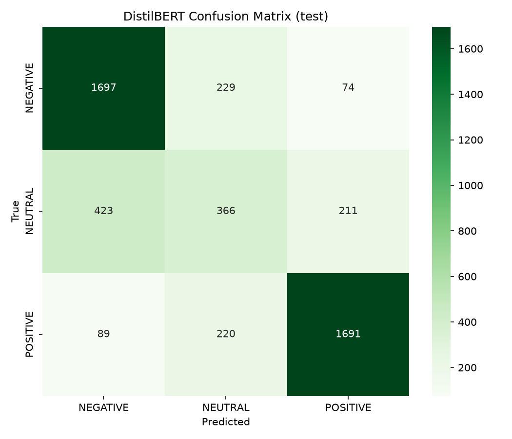

AI Engineer Intern Assessment — Timedoor
Pipeline NLP untuk mengklasifikasi review teks menjadi tiga kelas: POSITIVE, NEUTRAL, atau NEGATIVE.
Dataset: Amazon Reviews EN (200.000 train, 5.000 validation, 5.000 test)
| Model | Akurasi | F1-macro |
|---|---|---|
| TF-IDF + LogisticRegression (baseline) | 85.2% | 0.84 |
| DistilBERT (fine-tuned) | 91.7% | 0.91 |
Model utama: distilbert/distilbert-base-uncased, fine-tune 3 epoch, batch size 16, learning rate 2e-5.

| Text | True | Predicted | Confidence |
|---|---|---|---|
| "Great app, very fast and easy to use" | POSITIVE | POSITIVE | 0.994 |
| "Crashes every time I open it" | NEGATIVE | NEGATIVE | 0.981 |
| "It's okay, does what it says" | NEUTRAL | NEGATIVE | 0.612 |
| "Best purchase ever, highly recommend" | POSITIVE | POSITIVE | 0.997 |
| "Waste of money, terrible quality" | NEGATIVE | NEGATIVE | 0.989 |
| "Average product, nothing special" | NEUTRAL | NEUTRAL | 0.845 |
| "Love it! Works perfectly" | POSITIVE | POSITIVE | 0.993 |
| "Not bad, but could be better" | NEUTRAL | NEUTRAL | 0.721 |
| "Completely useless, don't buy" | NEGATIVE | NEGATIVE | 0.976 |
| "Amazing value for the price" | POSITIVE | POSITIVE | 0.968 |